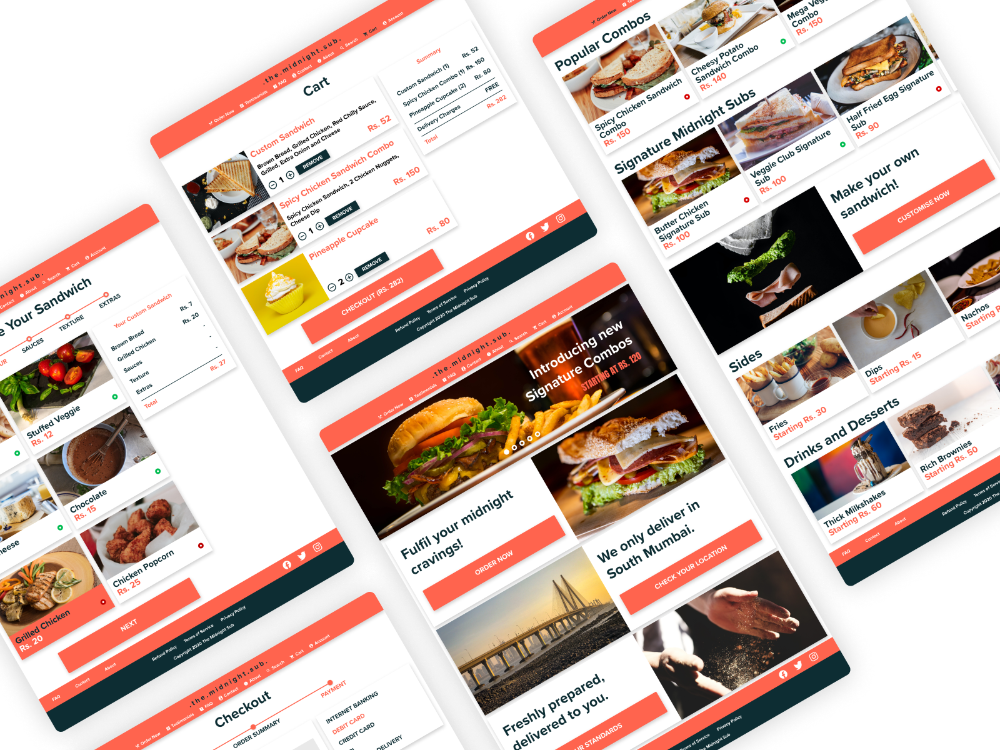
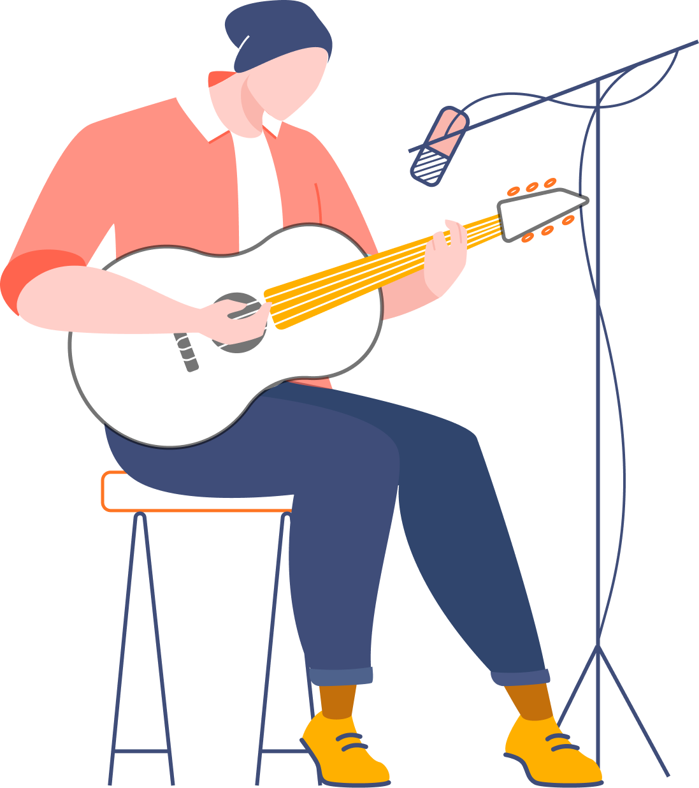
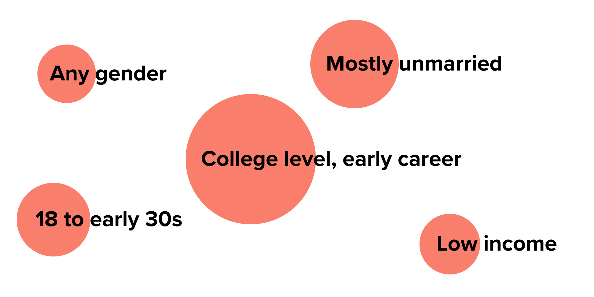
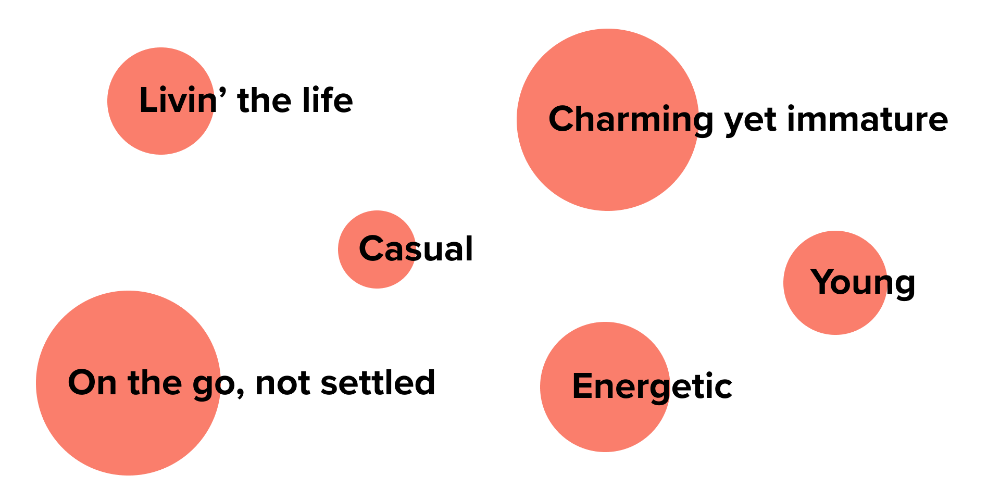
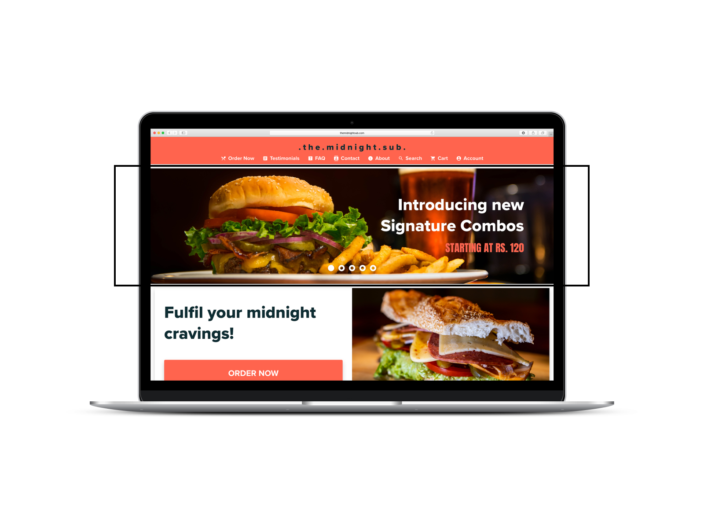
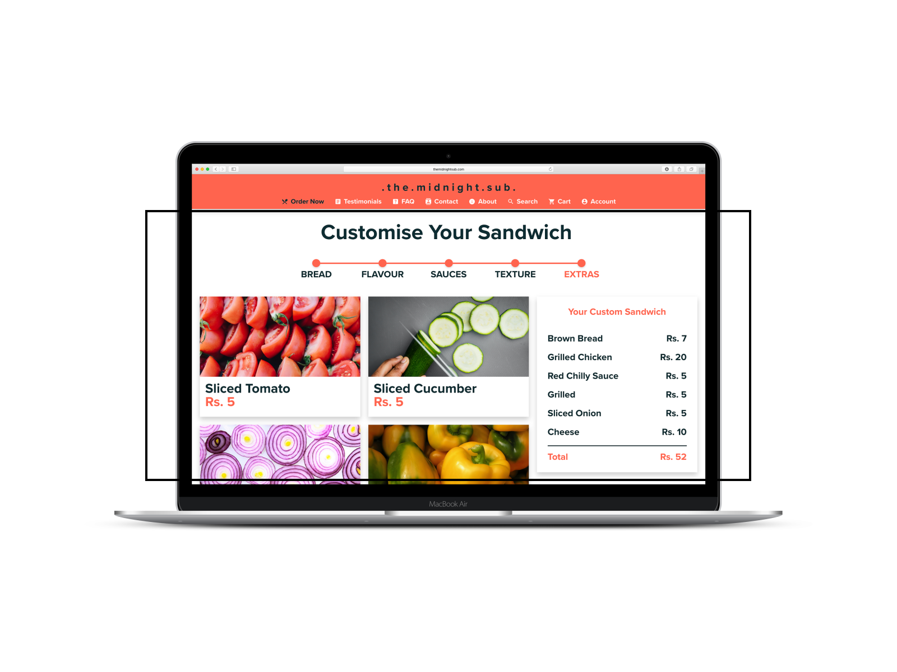
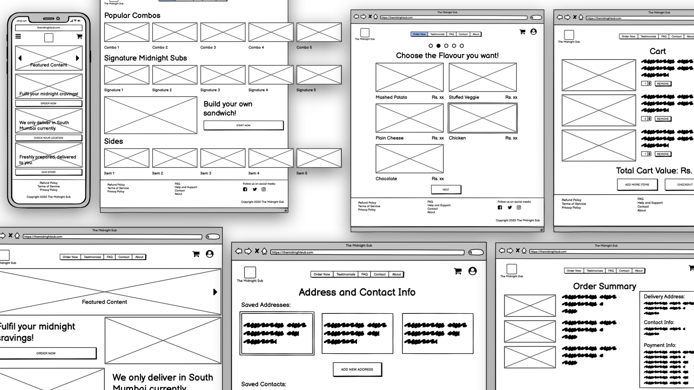
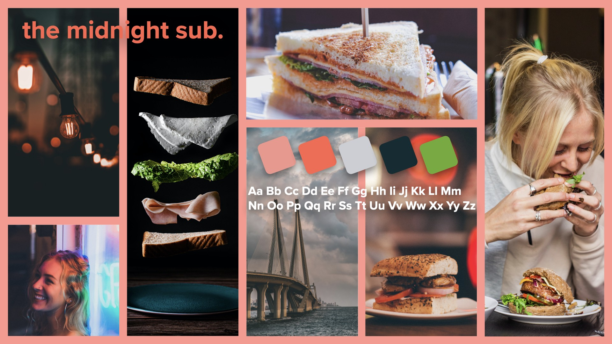

An entrepreneur wants to enter the food & beverage industry in India, and needs help in setting up the business as well as a website for the same. Plan and design the website for the entrepreneur.
Solution
___
My solution to the entrepreneur's problem was to start a cloud kitchen that would target a specific group of audience. The highlight of the website would be a unique customisation and ordering system.

Design Process
How I solved the problem, and how did I get here?
___
Business
Why cloud kitchen? 🤔
___
1
The business needs to start quickly, and a cloud kitchen requires minimal setup.
2
Because a cloud kitchen doesn't incur extra costs that restaurants do, the setup cost is lower.
3
The coronavirus pandemic has posed challenges, but a cloud kitchen is sustainable in such a period.
Location
Which neighbourhood should the cloud kitchen cater to? 📍
___
Business of a cloud kitchen primarily depends on deliveries, and hence the neighbourhood that the kitchen caters to becomes essentially important. I researched a bit about cloud kitchens and summarised my findings in broad points.
new_releases
New concept
The concept of cloud kitchens is fairly new in India.
location_city
Big cities
Typically, a majority of cloud kitchens serve in big cities.
delivery_dining
Supplies and support
Essential requirements and logistical support are easily available in cities.
groups
Audience
Cities offer appropriate audience that facilitate business of cloud kitchens.
Considering all these factors, I decided that this cloud kitchen would cater to South Mumbai area in Mumbai, India.
Audience
Which audience should the cloud kitchen target? 👫
___
South Mumbai and nearby areas are prime destinations for offices. Additionally, several educational institutions, colleges and training centers are situated in this region. Therefore, I decided to target these two specific categories of people for the cloud kitchen.

College students
Night shift workers
User Research
What does our target audience want?
___
Demographics
I noted down the key demographic information of intended target audience, which indicated categorical parameters in which they belong.

Psychographics
The psychographic analysis of target audience revealed their personalities and the kind of life they live.

User Needs
Based on the demographic and psychographic information of the target audience, I figured the three main user needs.
1
Easy to grab food that can be consumed on-the-go
2
Food that can be customised to their tastes
3
Affordable, low cost & budget friendly
Food
Let's deliver sandwiches! 🥪
___
After a considerable amount of thought, I decided that the cloud kitchen would be preparing sandwiches and related items. The reason I chose sandwiches is that they fit well in all the boxes of user needs and offer great scope for customisation.
How can the website be tailored for our specific audience?
___

Promote affordability
Since budget friendly options are priority for our users, why not promote affordability of our offerings right on the homepage? The website homepage has a dedicated section that encourages users to take advantage of the deals and offers.

Unique customisation options
Our audience likes customised food based on their own preferences. Let's give them that! The website lets the users customise their sandwiches in a step-wise process where they can completely choose what goes in their special sandwich.
Let's get designing!
How did I come up with the design?
___
Information Architecture
Before starting with designing, I built a sitemap that helped me in overviewing the architecture of the website.
Structure & Layout
Once the architecture was finalised, I designed the wireframes using Balsamiq. Decisions revolving around the layout and positioning of different elements were taken at this stage.

Look & Feel
As the design of the website was shaping up, I developed a moodboard to finalise the details like colour, typography and imagery that would be used in the website.

Final Design
I designed the high fidelity visual mockups using Adobe XD. Taking wireframes as a base, I designed multiple screens of the website including the homepage, lister page, customisation & ordering process, and testimonials page.